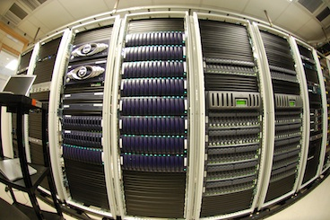

Volumes Access Install¶
mounting BlueArc volumes¶
reboot to activate autofs mount.you should have all partitions mounted in /mnt according to /etc/auto.lamaison
home -fstype=nfs,vers=3,proto=tcp,hard,intr,timeo=600,retrans=2,wsize=32768,rsize=32768 peace:/home
shared -fstype=nfs,vers=3,proto=tcp,hard,intr,timeo=600,retrans=2,wsize=32768,rsize=32768 peace:/shared
work -fstype=nfs,vers=3,proto=tcp,hard,intr,timeo=600,retrans=2,wsize=32768,rsize=32768 peace:/work
groups -fstype=nfs,vers=3,proto=tcp,hard,intr,timeo=600,retrans=2,wsize=32768,rsize=32768 peace:/groups
echange -fstype=nfs,vers=3,proto=tcp,hard,intr,timeo=600,retrans=2,wsize=32768,rsize=32768 peace:/echange
medias -fstype=nfs,vers=3,proto=tcp,hard,intr,timeo=600,retrans=2,wsize=32768,rsize=32768 peace:/medias
symlinks for faster access¶
ln -s /mnt/autofs/echange/ /echange
ln -s /mnt/autofs/work/ /work
ln -s /mnt/autofs/groups/ /groups
ln -s /mnt/autofs/medias/ /medias
ln -s /mnt/autofs/shared/2014/shared /shared
Home as a remote directory¶
mv /home /home.bak
ln -s /mnt/autofs/home/ /home
Note that /home is now a remote directory.You need /home to be mounted to be able to log in.